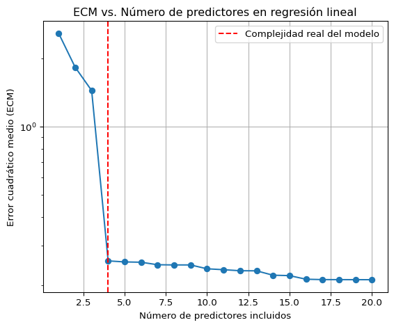
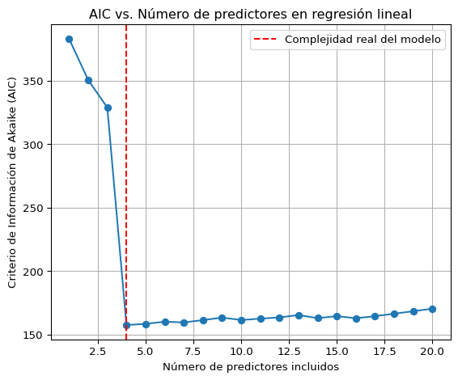
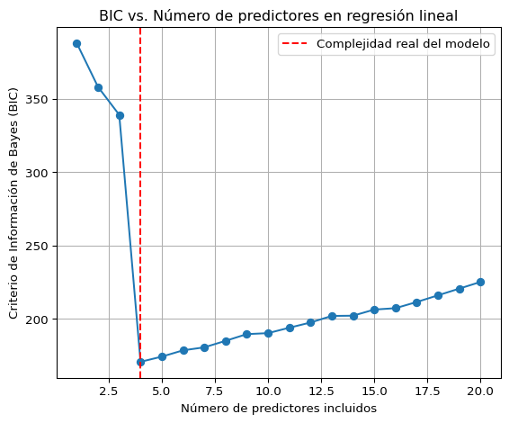
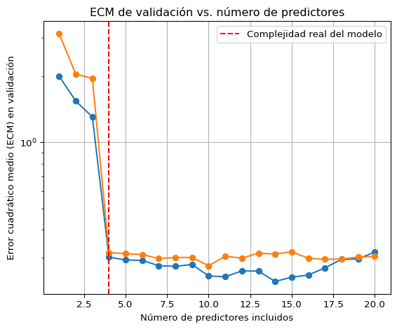
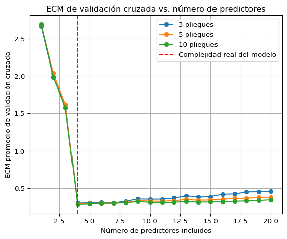
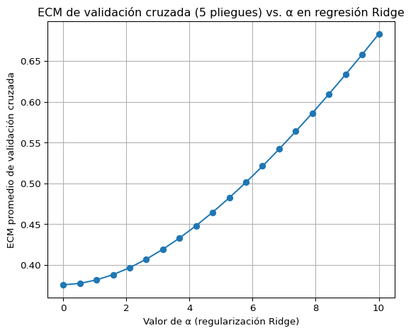
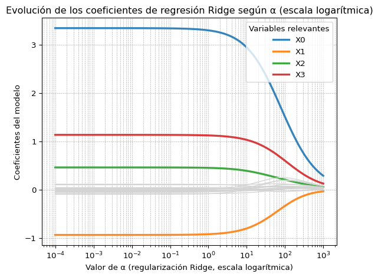
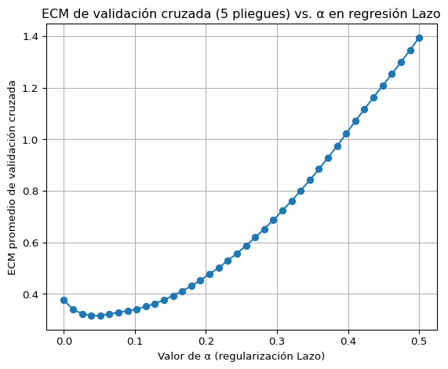
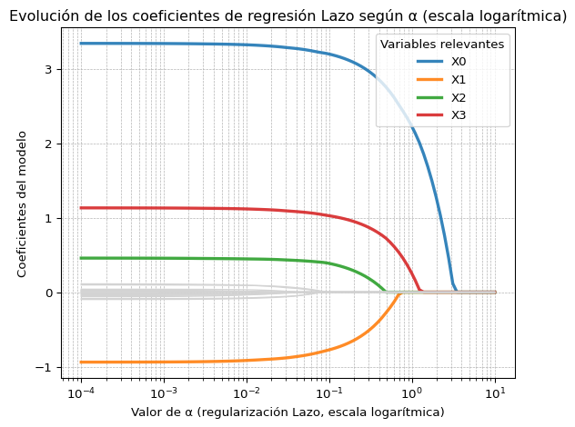

Ahora discutiremos cómo evaluar un modelo. Vimos que puede haber varias formas de ajustar los datos. Por ejemplo, podemos usar todos los predictores \(X_i\) o sólo algunos de ellos que consideramos más relevantes. El problema es que en general mientars más parámetros tenga un modelo, mejor será el ajuste a los datos usados para entrenarlo: Si el modelo tiene más libertad, la usa para ajustarse mejor. Sin embargo cuando tiene demasiada libertad se ajustará también a las fluctuaciones aleatorias en los datos, tal que al tratar de hacer predicciones a partir de datos no vistos cometerá errores (gran varianza). Al error cometido sobre datos no vistos se lo llama error de generalización. Un modelo que se ajusta muy bien a los datos usados para entrenarlo, pero que tiene un gran error de generalización se dice que no generaliza bien.
Por otro lado si tiene poca libertad no logrará capturar los patrones en los datos, lo que se llama poca expresividad del modelo, y cometerá un error grande al predecir (gran sesgo).
En esta clase veremos cómo hacer para evaluar modelos buscando el equilibrio entre la complejidad del modelo y el error de generalización. En otras palabras el equilibrio entre sesgo y varianza.
Cuando el número de parámetros es grande (dada una cantidad de datos), podemos intenar reducir su varianza. Esto se llama regularización que será muy importante cuando estudiemos redes neuronales. Introduciremos por ahora un par de métodos de regularización.
Código
import numpy as npimport matplotlib.pyplot as pltfrom sklearn.linear_model import LinearRegressionfrom sklearn.metrics import mean_squared_error# Semilla para reproducibilidadnp.random.seed(0)# Parámetrosn_muestras =100n_total_variables =20variables_reales = [0, 1, 2, 3] # Solo las dos primeras variables influyen en la respuesta# Generar una matriz de covarianza para producir predictores correlacionados.rho =0.1# alto grado de correlación entre predictorescov = np.full((n_total_variables, n_total_variables), rho)np.fill_diagonal(cov, 1.2)# Generar predictores correlacionados a partir de una distribución normal multivariada.X = np.random.multivariate_normal(mean=np.zeros(n_total_variables), cov=cov, size=n_muestras)# Generar variable dependiente con solo dos predictores realescoeficientes_reales = np.zeros(n_total_variables)coeficientes_reales[variables_reales] = [3.0, -0.8, 0.5, 1.0]y = X @ coeficientes_reales + np.random.randn(n_muestras) *0.5# Agregar ruido# Calcular el error cuadrático medio (ECM) al incluir más predictoreslista_ecm = []for n_vars inrange(1, n_total_variables +1): modelo = LinearRegression() modelo.fit(X[:, :n_vars], y) y_pred = modelo.predict(X[:, :n_vars]) ecm = mean_squared_error(y, y_pred) lista_ecm.append(ecm)# Graficar los resultadosplt.figure(figsize=(6, 5))plt.plot(range(1, n_total_variables +1), lista_ecm, marker='o')plt.yscale("log")plt.axvline(x=len(variables_reales), color='red', linestyle='--', label='Complejidad real del modelo')plt.xlabel('Número de predictores incluidos')plt.ylabel('Error cuadrático medio (ECM)')plt.title('ECM vs. Número de predictores en regresión lineal')plt.legend()plt.grid(True)plt.tight_layout()plt.show()

Figura 1: Error cuadrático medio para la regresión lineal cuando la señal real depende solo de dos predictores.
En la Figura 1 graficamos el error cuadrático medio para una regresión lineal \(\sum_{i=1}^p \beta_i X_i\) a partir de datos ficticios. Los datos reales fueron producidos por sólo tres predictores. Sin embargo, vemos que al incluir más y más variables el error cuadrático medio sigue decreciendo.
Métodos de Evaluación de Modelos
Hay globalmente dos formas de evaluar el error que cometerá el modelo cuando se usa en datos no usados para entrenarlo. Uno consiste en intentar penalizar modelos más complejos basándose en principios estadísticos, y otro consiste en usar los mismos datos para la evaluación.
Criterios de información para penalizar modelos complejos
Existen varios criterios apra evaluar modelos basados en la teoría de probabilidad.
Criterio de información de Akaike
Supongamos que los datos subyacentes tienen una distribución de probabilidad \(f(y)\) y nosotros la aproximamos con una verosimilitud \(L(y|\theta)\). Una manera de cuantificar la diferencia entre las dos distribuciones es medir la entropía. Esto se hace mediante la divergencia de Kullback Liebler\[
\begin{multline}
D_{KL}(f || p) = \int dy\,f(y)\log\left(\frac{f(y)}{L(y|\theta)}\right) \\ = \int dy\,f(y)\log f(y) - \int dy\,f(y)\log L(y|\theta) = -\langle L(y|\theta)\rangle + const.\,.
\end{multline}
\] Se puede demostrar que \(D_{KL}(f || p) > 0\) y es cero sólo cuando \(f = p\). Además tiene la interpretación de ser igual a la entropía de \(f\) más el costo asociado con usar \(p(y)\) al analizar los datos.
Ahora bien, supongamos que estimamos los parámetros maximizando la verosimilitud. Sea \(\log\hat{L}\) el máximo valor de la verosimilitud. Akaike demostró que este es un estimador sesgado de \(\langle \ln L\rangle\). Tal que un estimador no sesgado de la divergencia de Kullback Liebler (a parte constantes) es \[
AIC = 2p -2\log\hat{L}\,.
\] Un menor \(AIC\) representa un mejor ajuste en el sentido que la distribución de probabilidad es más cercana a la subyacente.
El valor de \(AIC\) no es importante, lo importante es la diferencia de valores entre modelos. En general una diferencia de \(AIC\) de \(2\) o menos indica que los modelos son equivalentes. Una diferencia entre 4 y 7 es una evidencia moderada de que el modelo con el \(AIC\) más alto no describe los datos. Una diferencia mayor a \(10\) suele indicar una evidencia más fuerte. En general \(\exp((AIC_{min} - AIC)/2)\) es proporcional a la probabilidad de que el modelo minimice la pérdida de información.
Código
import numpy as np# Lista para guardar los valores de AIClista_aic = []# Número de muestrasn = n_muestras# Calcular AIC para cada modelo con distinto número de predictoresfor n_vars inrange(1, n_total_variables +1): X_sub = X[:, :n_vars] X_con_bias = np.hstack([np.ones((n_muestras, 1)), X_sub]) # Agregar término independiente# Ajuste por mínimos cuadrados beta = np.linalg.pinv(X_con_bias.T @ X_con_bias) @ X_con_bias.T @ y y_pred = X_con_bias @ beta# Log-verosimilitud bajo supuestos normales con varianza constante residuo = y - y_pred sigma2 = np.mean(residuo**2) log_verosimilitud =-n /2* (np.log(2* np.pi * sigma2) +1)# Número de parámetros (incluye término independiente) k = n_vars +1# AIC aic =2* k -2* log_verosimilitud lista_aic.append(aic)import matplotlib.pyplot as plt# Graficar AICplt.figure(figsize=(6, 5))plt.plot(range(1, n_total_variables +1), lista_aic, marker='o')plt.axvline(x=4, color='red', linestyle='--', label='Complejidad real del modelo')plt.xlabel('Número de predictores incluidos')plt.ylabel('Criterio de Información de Akaike (AIC)')plt.title('AIC vs. Número de predictores en regresión lineal')plt.legend()plt.grid(True)plt.tight_layout()plt.show()

Figura 2: AIC para datos sintéticos generados a partir de tres predictores.
Si aplicamos este criterio a nuestro modelo de juquete, vemos que la cantidad \(AIC\) tiene un mínimo justo en \(3\) predictores.
Criterio de información de Bayes
En la visión bayesiana podemos asignarle una probabilidad a cada modelo dados los datos. En esa óptica podemos escoger el modelo más probable. Aplicando el teorema de Bayes tenemos \[
\frac{P(M_1|D)}{P(M_2|D)} = \frac{P(D|M_1)}{P(D|M_2)}\frac{P(M_1)}{P(M_2)} \equiv \frac{E_1}{E_2} \frac{P(M_1)}{P(M_2)}\,.
\] La probabilidad previa \(P(M)\) está dada por información anterior al momento en que realizamos el experimento. En muchos casos no tenemos una preferencia por un modelo específico tal que \(P(M_2)/P(M_1) = 1\). La evidencia bayesiana\(E \equiv P(D|M)\) es la probabilidad de los datos dado el modelo integrada sobre los parámetros del modelo\[
P(D|M) = \int d^p\beta\,P(D|M, \boldsymbol{\beta}) = \int d^p\beta\,L(\boldsymbol{\beta})\,.
\] Existen códigos que pueden calcular la integral de la verosimilitud sobre todos los posibles valores de los parámetros.
Esto suele ser algo costoso computacionalmente, tal que en muchos casos (sobre todo por fuera de la física) se usa una expresión aproximada válida para un número grande de mediciones i.i.d., escogiendo el modelo que minimiza el criterio de información de Bayes\[
BIC = -2\ln\hat{L} + p\ln n\,.
\] Comparado con el AIC, el BIC penaliza más fuertemente los modelos con más parámetros.
Demostración
Primero asumimos que las mediciones son i.i.d., tal que \(L = \prod_i p(x_i)\) y entonces \(\ln L = \sum_i \ln p(x_i)\). Para \(n\) grande podemos aproximar \(\sum_i \ln p(x_i) \approx n \langle\ln p\rangle \equiv n f(\boldsymbol{\beta})\).
Usando eso, aproximamos la integral cerca del máximo. Esta aproximación es buena para \(n\) grande \[
\begin{multline}
P(D|M) \approx \int d^p\beta\,e^{\ln L(\boldsymbol{\beta})} \approx \int d^p\beta\,e^{n\ln f(\boldsymbol{\beta})} \\ \approx \int d^p\beta\,e^{n\ln f(\hat{\boldsymbol{\beta}}) + n\frac{\partial \ln f(\hat{\boldsymbol{\beta}})}{\partial \beta^i \partial \beta^j} (\boldsymbol{\beta}^i - \hat{\boldsymbol{\beta}}^i)(\boldsymbol{\beta}^j - \hat{\boldsymbol{\beta}}^j)} = e^{n\ln f(\hat{\boldsymbol{\beta}})}\left(\frac{|\partial^2 \ln f /\partial\beta^2|^{-1/2}}{n^{p/2}(2\pi)^{p/2}}\right)\,.
\end{multline}
\] Tomando el logaritmo obtenemos \[
\ln P(D|M) \approx \ln\hat{L} - \frac{k}{2}\ln n + const.
\] de donde se obtiene el BIC.
Código
import numpy as np# Lista para guardar los valores de AIClista_aic = []# Número de muestrasn = n_muestras# Calcular AIC para cada modelo con distinto número de predictoresfor n_vars inrange(1, n_total_variables +1): X_sub = X[:, :n_vars] X_con_bias = np.hstack([np.ones((n_muestras, 1)), X_sub]) # Agregar término independiente# Ajuste por mínimos cuadrados beta = np.linalg.pinv(X_con_bias.T @ X_con_bias) @ X_con_bias.T @ y y_pred = X_con_bias @ beta# Log-verosimilitud bajo supuestos normales con varianza constante residuo = y - y_pred sigma2 = np.mean(residuo**2) log_verosimilitud =-n /2* (np.log(2* np.pi * sigma2) +1)# Número de parámetros (incluye término independiente) k = n_vars +1# BIC bic = k*np.log(n) -2* log_verosimilitud lista_aic.append(bic)import matplotlib.pyplot as plt# Graficar AICplt.figure(figsize=(6, 5))plt.plot(range(1, n_total_variables +1), lista_aic, marker='o')plt.axvline(x=4, color='red', linestyle='--', label='Complejidad real del modelo')plt.xlabel('Número de predictores incluidos')plt.ylabel('Criterio de Información de Bayes (BIC)')plt.title('BIC vs. Número de predictores en regresión lineal')plt.legend()plt.grid(True)plt.tight_layout()plt.show()

Figura 3: BIC para datos sintéticos generados a partir de tres predictores.
Evaluación de modelos usando subconjuntos aleatorios
En algunos casos no es fácil escribir una verosimilitud y entonces no podemos usar los criterios de la sección anterior. Esto ocurre con mucha frecuencia cuando se trabaja con modelos de redes neuronales.
Cuando es así, la práctica común es estimar la precisión del modelo sobre datos no vistos usando un subconjunto de los datos mismos.
El conjunto de validación
Una manera de lograrlo es separar una fracción de los datos para que sea un conjunto de validación. Los datos que no son parte de este forman el conjunto de entrenamiento. El modelo se ajusta o entrena con el conjunto de entrenamiento y el de validación se usa solo para evaluar su desempeño. Como el modelo no vio el conjunto de validación, el error cometido sobre él será una aproximación al error que cometerá cuando vea datos nuevos. Como sabemos los \(Y\) del conjunto de validación, podemos calcular dicho error.
Es decir, procedemos en tres pasos:
Separar los datos en un conjunto de entrenamiento y un conjunto de validación. Con frecuencia se usa el 10% o 20% de los datos para el conjunto de validación.
Entrenar el modelo en el conjunto de entrenamiento.
Evaluar el modelo en el conjunto de validación.
En general, la estima del error de generalización obtenida de esta manera tendrá un sesgo porque usamos sólo un subconjunto de datos para entrenar el modelo. Un modelo entrenado en más datos funcionará mejor con un error menor generalización. En este sentido es una estima pesimista. Además tendrá una varianza ya que el subconjunto de validación es aleatorio.
Código
import numpy as npimport matplotlib.pyplot as pltfrom sklearn.model_selection import train_test_splitdef val_error(X, y, random_state):# Separar en conjunto de entrenamiento (80%) y validación (20%) X_entrenamiento, X_validacion, y_entrenamiento, y_validacion = train_test_split(X, y, test_size=0.2, random_state=random_state)# Lista para almacenar errores de validación lista_ecm_validacion = []# Probar diferentes cantidades de predictoresfor n_vars inrange(1, n_total_variables +1):# Seleccionar subconjunto de variables X_ent_sub = X_entrenamiento[:, :n_vars] X_val_sub = X_validacion[:, :n_vars]# Agregar término independiente (bias) X_ent_bias = np.hstack([np.ones((X_ent_sub.shape[0], 1)), X_ent_sub]) X_val_bias = np.hstack([np.ones((X_val_sub.shape[0], 1)), X_val_sub])# Ajustar modelo por mínimos cuadrados beta = np.linalg.pinv(X_ent_bias.T @ X_ent_bias) @ X_ent_bias.T @ y_entrenamiento# Predecir en conjunto de validación y_val_predicho = X_val_bias @ beta# Calcular error cuadrático medio en validación ecm_val = np.mean((y_validacion - y_val_predicho) **2) lista_ecm_validacion.append(ecm_val)return lista_ecm_validacionlista_ecm_validacion_1 = val_error(X, y, 42)lista_ecm_validacion_2 = val_error(X, y, 10)# Graficar error de validación frente al número de predictoresplt.figure(figsize=(6, 5))plt.plot(range(1, n_total_variables +1), lista_ecm_validacion_1, marker='o')plt.plot(range(1, n_total_variables +1), lista_ecm_validacion_2, marker='o')plt.axvline(x=4, color='red', linestyle='--', label='Complejidad real del modelo')plt.xlabel('Número de predictores incluidos')plt.ylabel('Error cuadrático medio (ECM) en validación')plt.yscale("log")plt.title('ECM de validación vs. número de predictores')plt.legend()plt.grid(True)plt.tight_layout()plt.show()

Figura 4: Error con varios conjuntos de validación.
En la Figura 4 graficamos el error de validación estimado con usando dos particiones distintas de los datos entre validación y entrenamiento. Vemos que la estimación del error de generalización tiene varianza (varía dependiendo de cuál es el conjunto de validación).
Validación cruzada
Si queremos reducir el sesgo y la varianza, podemos tomar el promedio de muchas validaciones diferentes. La manera de hacerlo es:
Dividir el conjunto de datos en \(k\) partes.
Usar una parte como conjunto de validación.
Usar \(k - 1\) partes para entrenar el modelo. Validar con la parte restante.
Repetir \(k\) veces hasta usar todas las partes como validación.
Esto nos permite promediar sobre los \(k\) valores obtenidos para el error, esperando tener una varianza menor. A mayor \(k\), mayor será el conjunto de datos usado para entrenar y por lo tanto más cercano al modelo completo. Pero al aumentar \(k\) los valores obtenidos para la estima del error estarán más correlacionados ya que los diferentes conjuntos usados para entrenar se parecerán más, lo que aumenta la varianza. En la práctica se usa \(k\) entre \(3\) y \(10\).
Código
# Reimportar bibliotecas necesarias tras el reinicioimport numpy as npimport matplotlib.pyplot as pltfrom sklearn.model_selection import KFold# Lista de valores de K para validación cruzadavalores_k = [3, 5, 10]# Diccionario para almacenar los resultadosresultados_cv = {}# Realizar validación cruzada para cada valor de Kfor k in valores_k: kf = KFold(n_splits=k, shuffle=True, random_state=0) ecm_promedios = []for n_vars inrange(1, n_total_variables +1): errores_fold = []for train_index, val_index in kf.split(X): X_entrenamiento, X_validacion = X[train_index, :n_vars], X[val_index, :n_vars] y_entrenamiento, y_validacion = y[train_index], y[val_index]# Agregar término independiente (bias) X_ent_bias = np.hstack([np.ones((X_entrenamiento.shape[0], 1)), X_entrenamiento]) X_val_bias = np.hstack([np.ones((X_validacion.shape[0], 1)), X_validacion])# Ajustar modelo beta = np.linalg.pinv(X_ent_bias.T @ X_ent_bias) @ X_ent_bias.T @ y_entrenamiento y_val_pred = X_val_bias @ beta# Calcular error cuadrático medio ecm = np.mean((y_validacion - y_val_pred) **2) errores_fold.append(ecm) ecm_promedios.append(np.mean(errores_fold)) resultados_cv[k] = ecm_promedios# Graficar los resultadosplt.figure(figsize=(6, 5))for k in valores_k: plt.plot(range(1, n_total_variables +1), resultados_cv[k], marker='o', label=f'{k} pliegues')plt.axvline(x=4, color='red', linestyle='--', label='Complejidad real del modelo')plt.xlabel('Número de predictores incluidos')plt.ylabel('ECM promedio de validación cruzada')plt.title('ECM de validación cruzada vs. número de predictores')plt.legend()plt.grid(True)plt.tight_layout()plt.show()

Figura 5: Error con validación cruzada para varios valores de \(k\).
En la práctica se puede usar validación cruzada cuando el modelo es pequeño y barato de entrenar (tarda algunos minutos). Pero si el modelo es costoso de entrenar usualmente se usa un solo conjunto de validación.
Métodos para Explorar Modelos
Ya tenemos varias herramientas para evaluar el desempeño de los modelos. Esto nos puede servir para comparar varios modelos y escoger el mejor.
Consideremos el ejemplo del ajuste lineal con \(20\) variables. Para escoger cuales variables predicen mejor el resultado podríamos evaluar todas las combinaciones posibles. Esto es muy costoso porque hay \(2^20 \approx 1\times 10^6\) modelos. Ahora discutiremos algunas estrategias:
Búsqueda hacia adelante y hacia atrás
La búsqueda hacia adelante consiste en lo siguiente:
A partir de un modelo con \(\ell\) variables, llamado \(\mathcal{M}_\ell\), le agregamos una de las \(q - \ell\) variables faltantes.
Repetimos para cada una de las variables faltantes y escogemos el mejor de estos \(q - \ell\) modelos en el sentido que sea el que obtiene el \(R^2\) o más alto. Lo llamamos \(\mathcal{M}_{\ell + 1}\).
Repetimos 1 y 2 a partir de \(\mathcal{M}_{\ell + 1}\) para obtener \(\mathcal{M}_{\ell + 2}\).
Para comparar los modelos \(\mathcal{M}_1, ..., \mathcal{M}_q\) usamos validación cruzada, AIC o BIC.
La búsqueda hacia atrás es similar pero empezamos por un modelo con todas las variables.
A partir de un modelo con \(\ell\) variables, llamado \(\mathcal{M}_\ell\), quitamos una de esas variables.
Repetimos para cada una de las \(\ell\) variables y escogemos el mejor de estos \(\ell\) modelos en el sentido que sea el que obtiene el \(R^2\) o más alto. Lo llamamos \(\mathcal{M}_{\ell - 1}\).
Repetimos 1 y 2 a partir de \(\mathcal{M}_{\ell - 1}\) para obtener \(\mathcal{M}_{\ell - 2}\).
Para comparar los modelos \(\mathcal{M}_1, ..., \mathcal{M}_q\) usamos validación cruzada, AIC o BIC.
Búsqueda aleatoria
Cuando el número de modelos es grande, y cuando no hay claridad sobre los hiperparámetros a usar, uno puede explorar modelos de forma aleatoria. La idea es que habrán muchos modelos parecidos entre ellos, tal que la búsqueda aleatoria puede encontrar varias zonas en el espacio de hiperparámetros y escoger la mejor.
Estos métodos de búsqueda son aún muy costosos cuando el número de hiperparámetros es grande. Por eso se han desarrollado métodos más sofisticados como uno inspirado en métodos bayesianos para explorar el espacio de hiperparámetros de forma más eficiente.
Conjunto de prueba
Cuando se busca un modelo entre muchos, el modelo se puede ajustar al conjunto de validación. Es como si uno hiciera un entrenamiento adicional a mano. Por lo tanto, el error de validación o validación cruzada puede ser mucho menor que el error de generalización.
Para atacar este problema lo usual en aprendizaje automático es separar una fracción de los datos antes de empezar cualquier análisis, escogidos aleatoriamente para testear el modelo al final del análisis. Es decir, uno separa el \(10-20\%\) de los datos en un conjunto de prueba y se usa sólo al final para evaluar el mejor modelo obtenido. De esta manera tendremos una idea de cómo se comportará ese modelo con datos no vistos nunca durante el entrenamiento ni la selección de modelos.
Regularización
Finalmente, en vez de escoger el modelo como mostramos arriba, podemos quedarnos con un modelo grande de muchos parámetros y variables e intentar reducir el impacto de las que no sean importantes. Siendo laxos, decimos que hacemos que el modelo aprenda cuáles variables son relevantes. Veremos dos métodos que nos permiten lograrlo con regresión lineal. También se pueden aplicar a la regresión logística que no es otra cosa que la regresión lineal para el logit.
Esto nos da un ejemplo de cómo podemos modificar la función de costo para guiar el aprendizaje. El método de regresión lineal minimiza la suma de diferencias al cuadrado, que llamamos nuestra función de costo en ese caso \[
\mathcal{L} = \sum_{i = 1}^n(y_i - \hat{y}_i)^2 = \sum_{i=1}^n\left[y_i - \beta_0 - \sum_{j = 1}^q \beta_j x_{ij}\right]^2\,.
\] Los métodos que veremos le agregan un término a esta función de costo para guiar el aprendizaje. La idea es que al modelo le “cueste” más ir en una dirección que no nos gusta.
Regresión con regularización L2 (ridge regression)
Lo primero que podemos intentar es hacer que el modelo pague por coeficientes grandes. De esa manera se atreverá a hacer apreciables sólo los \(\beta_i\) que corresponden a variables verdaderamente importantes. Lo que hacemos es agregarle un término a la función de coste \[
\mathcal{L} = \sum_{i=1}^n\left[y_i - \beta_0 - \sum_{j=1}^q\beta_j x_j\right]^2 + \alpha\sum_{j=0}^q\beta_j^2\,.
\] Aquí \(\alpha\) es un hiperparámetro que controla cuánto paga el modelo por encender coeficientes. Para \(\alpha\) que tiende a infinito todos los coeficientes tenderán cero, para \(\alpha\) cero regresamos al ajuste lineal de antes. Tomamos los cuadrados porque nos interesa que los coeficientes poco importantes sean cercanos a cero.
Para escoger \(\alpha\) podemos usar validación cruzada.
Código
from sklearn.model_selection import KFoldfrom sklearn.preprocessing import StandardScalerfrom sklearn.linear_model import Ridgefrom sklearn.metrics import mean_squared_error# Escalar los datos para que la regularización sea comparable entre variablesescalador = StandardScaler()X_escalado = escalador.fit_transform(X)# Crear validación cruzada con 5 pliegueskf = KFold(n_splits=5, shuffle=True, random_state=0)# Lista para guardar errores promedio de validación cruzadalista_ecm_cv = []# Valores de alpha valores_alpha_lineal = np.linspace(0, 10, 20)# Calcular ECM de validación cruzada para cada valor de alphafor alpha in valores_alpha_lineal: errores_fold = []for train_index, val_index in kf.split(X_escalado): X_ent, X_val = X_escalado[train_index], X_escalado[val_index] y_ent, y_val = y[train_index], y[val_index] modelo_ridge = Ridge(alpha=alpha, fit_intercept=True) modelo_ridge.fit(X_ent, y_ent) y_val_pred = modelo_ridge.predict(X_val) ecm_val = mean_squared_error(y_val, y_val_pred) errores_fold.append(ecm_val) lista_ecm_cv.append(np.mean(errores_fold))# Graficar ECM de validación cruzada frente a alphaplt.figure(figsize=(6, 5))plt.plot(valores_alpha_lineal, lista_ecm_cv, marker='o')plt.xlabel('Valor de α (regularización Ridge)')plt.ylabel('ECM promedio de validación cruzada')plt.title('ECM de validación cruzada (5 pliegues) vs. α en regresión Ridge')plt.grid(True)plt.tight_layout()plt.show()

Figura 6: Error de validación cruzada con \(k = 5\) pliegues para regularización L2
En la Figura 6 vemos que el error decrece inicialmente al aumentar \(\alpha\) ya que los coeficientes de las variables poco importantes son suprimidos. Luego alcanza un valor mínimo a partir del cual vuelve a crecer porque el modelo pierde expresividad.
Código
# Nuevos valores de alpha en escala logarítmica, extendidos hasta valores grandesvalores_alpha_log = np.logspace(-4, 3, 100) # de 1e-4 a 1e3# Guardar coeficientes para cada valor de alphacoeficientes_ridge_log = []for alpha in valores_alpha_log: modelo = Ridge(alpha=alpha) modelo.fit(X_escalado, y) coeficientes_ridge_log.append(modelo.coef_)coeficientes_ridge_log = np.array(coeficientes_ridge_log)# Graficar los coeficientes en función de alpha (escala log en x)plt.figure(figsize=(6, 5))for i inrange(n_total_variables):if i in variables_reales: plt.plot(valores_alpha_log, coeficientes_ridge_log[:, i], linewidth=2.5, label=f'X{i}', alpha=0.9)else: plt.plot(valores_alpha_log, coeficientes_ridge_log[:, i], color='lightgray', linewidth=1)plt.xscale('log')plt.xlabel('Valor de α (regularización Ridge, escala logarítmica)')plt.ylabel('Coeficientes del modelo')plt.title('Evolución de los coeficientes de regresión Ridge según α (escala logarítmica)')plt.legend(title='Variables relevantes')plt.grid(True, which='both', linestyle='--', linewidth=0.5)plt.tight_layout()plt.show()

Figura 7: Coeficientes en función de \(\alpha\) para regularización L2
En la Figura 7 vemos cómo se comportan los coeficientes a medida que cambia \(\alpha\).
Lazo o regularización L1
Una alternativa es usar la suma de valores absolutos \[
\mathcal{L} = \sum_{i=1}^n\left[y_i - \beta_0 - \sum_{j=1}^q\beta_j x_j\right]^2 + \alpha\sum_{j=0}^q|\beta_j|\,.
\]
Código
from sklearn.linear_model import Lasso# Escalar los datos para que la regularización sea comparable entre variablesescalador = StandardScaler()X_escalado = escalador.fit_transform(X)# Crear validación cruzada con 5 pliegueskf = KFold(n_splits=5, shuffle=True, random_state=0)# Lista para guardar errores promedio de validación cruzadalista_ecm_cv = []# Valores de alpha valores_alpha_lineal = np.linspace(0, 0.5, 40)# Calcular ECM de validación cruzada para cada valor de alphafor alpha in valores_alpha_lineal: errores_fold = []for train_index, val_index in kf.split(X_escalado): X_ent, X_val = X_escalado[train_index], X_escalado[val_index] y_ent, y_val = y[train_index], y[val_index] modelo_ridge = Lasso(alpha=alpha, fit_intercept=True) modelo_ridge.fit(X_ent, y_ent) y_val_pred = modelo_ridge.predict(X_val) ecm_val = mean_squared_error(y_val, y_val_pred) errores_fold.append(ecm_val) lista_ecm_cv.append(np.mean(errores_fold))# Graficar ECM de validación cruzada frente a alphaplt.figure(figsize=(6, 5))plt.plot(valores_alpha_lineal, lista_ecm_cv, marker='o')plt.xlabel('Valor de α (regularización Lazo)')plt.ylabel('ECM promedio de validación cruzada')plt.title('ECM de validación cruzada (5 pliegues) vs. α en regresión Lazo')plt.grid(True)plt.tight_layout()plt.show()

Figura 8: Error de validación cruzada con \(k = 5\) pliegues para la regresión lineal con regularización L1.
Código
# Nuevos valores de alpha en escala logarítmica, extendidos hasta valores grandesvalores_alpha_log = np.logspace(-4, 1, 100) # de 1e-4 a 1e3# Guardar coeficientes para cada valor de alphacoeficientes_ridge_log = []for alpha in valores_alpha_log: modelo = Lasso(alpha=alpha) modelo.fit(X_escalado, y) coeficientes_ridge_log.append(modelo.coef_)coeficientes_ridge_log = np.array(coeficientes_ridge_log)# Graficar los coeficientes en función de alpha (escala log en x)plt.figure(figsize=(6, 5))for i inrange(n_total_variables):if i in variables_reales: plt.plot(valores_alpha_log, coeficientes_ridge_log[:, i], linewidth=2.5, label=f'X{i}', alpha=0.9)else: plt.plot(valores_alpha_log, coeficientes_ridge_log[:, i], color='lightgray', linewidth=1)plt.xscale('log')plt.xlabel('Valor de α (regularización Lazo, escala logarítmica)')plt.ylabel('Coeficientes del modelo')plt.title('Evolución de los coeficientes de regresión Lazo según α (escala logarítmica)')plt.legend(title='Variables relevantes')plt.grid(True, which='both', linestyle='--', linewidth=0.5)plt.tight_layout()plt.show()

Figura 9: Comportamiento de los coeficientes para la regresión lineal con regularización L1.
En la Figura 9 vemos que esta regularización hace tender los coeficientes poco importantes exactamente a cero. Por este motivo funciona mejor cuando la variable que se quiere predecir depende pocos regresores (como en este ejemplo).
Para entender por qué pasa esto podemos ver la Figura 10 (sacada del libro). Las elipses representan diferentes niveles de la suma de errores al cuadrado. Siendo una ecuación cuadrática en los coeficientes nos podemos convencer que sus curvas de nivel deben ser cónicas que resultan ser elipses. La región llena es una curva de nivel de el término adicional agregado a la función de pérdida: Un círculo para L2 y un rombo para L1. La primera curva de nivel que intersecta el rombo tiende a hacerlo en uno de los ejes.
Figura 10: Regresión L1 vs L2, sacada del libro “Introduction to Statistical Learning”.